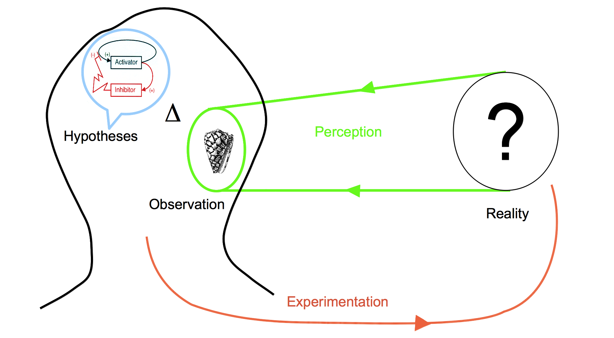
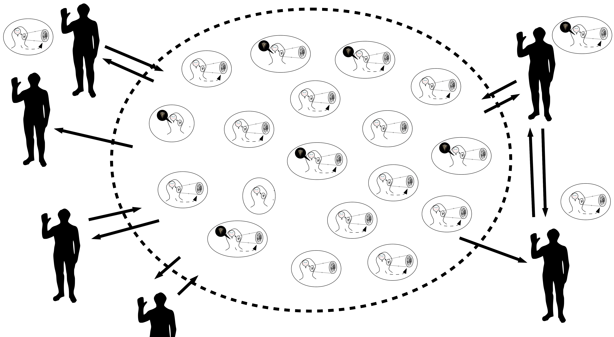
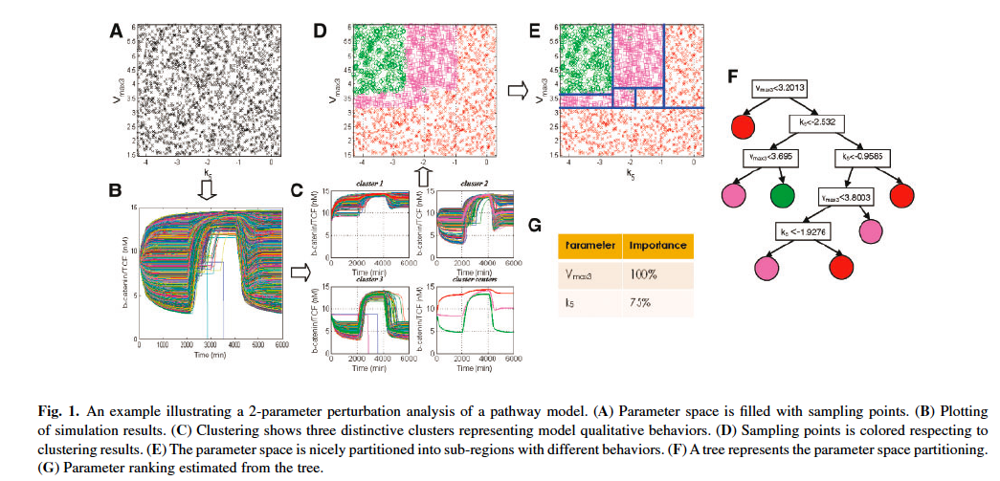
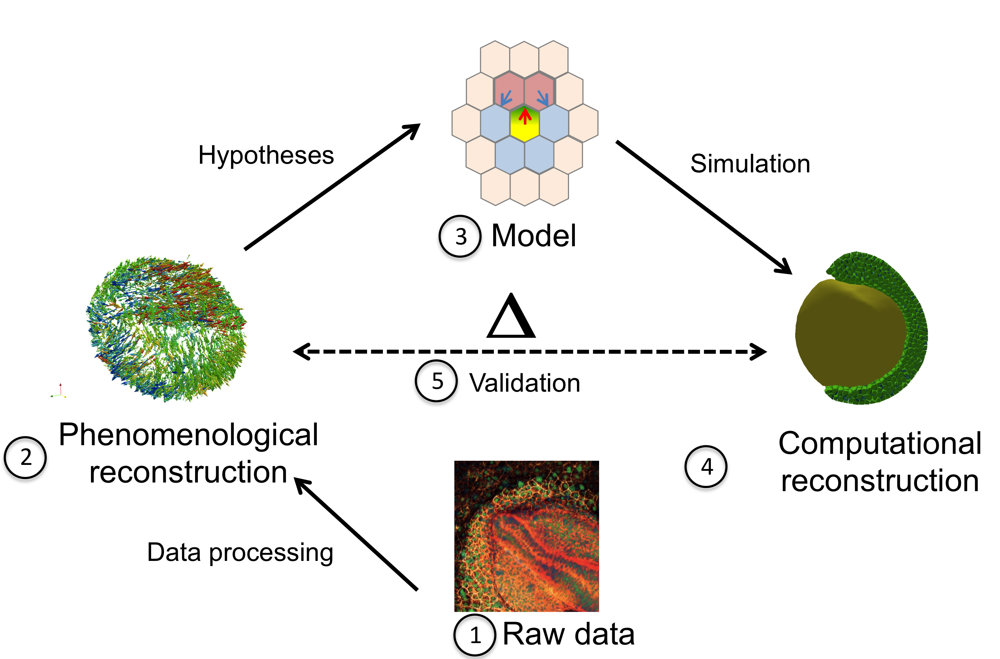

1.1.1. Historical timeline of the biology of development
Science of how the organisms form
The definition of development has its own embryology: it changed with the numerous discoveries which punctuated the history of this field of research.
A general definition would state that development is a dynamical process which leads a given organism to a given morphological state and that Development Biology is the study of the mechanisms which rule the coordination of cellular differentiation through space and time in multi-cellular organism.
It is interesting to note that this process never ends, the morphological state of an organism changes until senescence.
This process is not steady, organisms may alternate period of dramatic changes with quiet period or growth period.
Evolution of concept and terminology
traduit une évolution des pratiques
If Hippocrates is often labeled as the first embryologist, in his Hippocratic Collection, he describes the successive stages of incubation of hens'eggs ,
Aristotle's "De Generatione Animalium" initiated the main theory of the formation of living organism, which still hold today. This theory, called "epigenesis", states that organisms develop through changes of shape. New parts appear and deform themselves by a serie of stages.
In book II of "De Generatione Animalium", Aristotle foresaw the alternative theory which resisted until the 18th century: "preformation". It states that no new structure are generated during development, but parts simply unfold and grow. His words was: "Either all the parts, as heart, lung, liver, eye, and all the rest, come into being together or in succession, as is said in the verse ascribed to Orpheus, for there he says that an animal comes into being in the same way as the knitting of a net." .
the preformationists' parenthesis
preformation The organisms develop from miniature versions of themselves. Simple growth of the part without differentiation.
A third hypothesis was developed by Aristotle in the "Historia animalium" . Synthesizing contemporary thought, he introduces the theory of "spontaneous generation". This theory proposes that some complex organisms, like insects, are generated from non-living matter, like putrefying earth, vegetable matter or dead flesh.
jusqu'au 18 ieme pas grand chose
In 1651, William Harvey was among the firsts to consider embryonic development as a dynamic process requiring causal explanations of the sequences of events .
In 1664, Descartes' "De la formation du foetus" is posthumously published and it contains the first attempt to explain the formation of an animal embryo by the means of mechanical interactions. The male and female seeds would heat up and ferment until some of their particles would start to move and form the organs, from the heart which would push the blood directly towards the place it is freest to go and participating at the formation of the brain .
la fin de la generation spontanée
In 1668, Gregorio Redi realizes an experiment which discredits the spontaneous generation hypotheses by showing that no fly can form in a closed jar containing food or already dead flies. As maggots would appear when the same experiment was run in open jar, he concludes that the food or the dead flies could not produce maggots by themselves . The final blow to this theory was struck by Louis Pasteur two centuries later (1859) when, as a young chemist, he shown that a boiled meat broth would not produce new organisms. The game changer (XXXXXX) of his experimental setup was that he bent the neck of the container to give it a S shape. It allowed air to pass through it but not the aerial microorganism because of the gravity grounding them. When the broth was put in touch with inflexion point of the neck, a culture would rapidly start to grow.
fin de la preformation
/Users/Julien/Documents/Work/PhD/Images/
Drawing of the homonculi observed in sperm by Nicolaas Hartsoecker (1695)
The contention between preformists and the upholders of epigenesis lasted for a longer time.
Antonie van Leeuwenhoek was a Dutch scientist who created various microscopes. In 1676, he made the first observation of single-celled organisms, "animalcules", soon after Robert Hooke has first described and termed the "cells" . Leeuwenhoek was discovered that the sperm cells of animals, among which humans, was entering the egg cell . In addition to his contribution to the refutation of spontaneous generation, this discovery favored the spermist side of the preformation camp. Some of them started to describe miniatured humanoid shapes as did Nicolaas Hartsoeker in 1695 ().
Caspar Wolff
cell theory : every living creature is made of cells. Cell as the building block of the living
mendel law
-> look for cleavage
-> lignage,
-> body plan / rupture de symmetrie
-> bod
The rise of Developmental Biology
roux driesch
rough and artificial discontinuity in the process of development
phase 1 formation of the body plan
phase 2 growth of the parts
which can even cycle again as in butterfly...
or how the modern concepts settle down through history
+
/introducing development from evolution, inheritance, transmitted information, transformation of this information->development
2 questions :
.The question of the inputs: from what the shape is formed ?
.The question of how the shape evolve
inputs:
Aristotle considered the menstrual blood as the material out of which the embryo is made and the male semen is what triggered the generation.
The output depends on the stage of observation of the form: it changed as the tools to observe improved through history. Highly dependent of these orthogonal discoveries.
Hard to dissociate the developmental question from the question of evolution of species
Petit resumé d'intro
....
a faire a la fin
call pre developmental era until epigenesis win...
the development concept gains full interest when the epigenesis theory overcomes the preformation theory. Ever improving tools allow the observation of how the initial "fluid" (zygote) transforms itself.
the more dramatical change of shape and forms at the early stages of developement. for a long time unreachable
the more comtemporary question: molecular interaction in the cell: cytoskeleton dynamics, epigenetics regulation
classical study focused on sexual species, discoveries of new asexual species (as polyp,...) caused deep questioning until recent time discoveries allow an integrated understanding of all kind of species (centered around cell behavior)
....
Denomination:
from Hopwood
pre 1880: classical descriptive biology
1880-1930: classical experimental biology
1960: developmental biology
passage de descriptif a experimental très important.
description -> too speculative ??
experimental -> more serious ??
from hopwood:
"By the 1880s, academic embryology was in turmoil. The inability of teachers
to agree, especially on the relative weighting of embryological and comparative
anatomical evidence, turned influential students away from evolutionary
morphology. They abandoned problems such as the origin of the vertebrates
to focus on narrower questions, which they expected to answer using a more
limited selection of materials, and many modeled their science on experimental
physiology. Indeed, by opposing “experimental” to “descriptive” embryology,
the more militant secured an identity as experimental biologists in a
science they saw as overly descriptive and rife with unsupported speculation.
In the 1970s and 1980s, historians of biology reinvestigated the changes in
embryology between 1880 andWorldWar I as exemplifying that wider transformation
in the organization, problems, institutions, and methods of the life
sciences by which biology as we know it was made. Experimental embryology
and genetics were taken as model subdisciplines. Initial efforts to generalize
tended to reinforce a one-dimensional view of a “revolt from morphology,”
but later studies worked to produce a more nuanced and inclusive history.31
Yet the very agenda of searching for the origins of the new biology has underestimated
continuities and excluded significant innovations in human and
comparative embryological research."
->pas bien compris
descriptive bio unique tool to test evo hypotheses: for example comparing different species to investigate the relations of phylogeny and ontogeny. ??
experiment for development only questions??
"Experiment, we can conclude, worked in two ways: as a practice and as a
rhetoric, even an ideology.41 As a practice, experiment became the method
of highest status. As a rhetoric, experimentalism associated its practitioners
with modern rigor and control and simultaneously created “descriptive
embryology” as its unglamorous other, ideally relegated to a “classical” past.
Experiment did not in fact replace analysis but was added to it. Experimentalists
sought to reveal the potentialities of parts and analyzed operated embryos
for the presence or absence of tissues, cells, or molecules; they also invested
time in making standards, “normal stages” adapted from Keibel’s plates and
“fate maps,” against which to assess the effects of their interventions. Nor
did “descriptive embryology” just fade slowly into the background; in the
years before World War I, when most histories have experimenters making
all the running, “descriptive” embryologists founded both the first specifically
embryological society and the first research institution dedicated to the
science. And though the war seriously disrupted the European initiatives,
comparative work continued."
date
a
They know the law but not the mean: the race of inheritance structure ending with the discovery of DNA
dna
modern synthesis
Different era
ancient era
preformism vs development
middle age ?
pre-genome era
Germ layers: Remak 1855
morphological distinction ? or presumptive fate map ???
before considering the cell, hypotheses of development mechanisms
early 20th : "The leading cytologists of that time (primarily E.B. Wilson at Columbia University in New York City) recognized that development of the embryo is a manifestation of changes in individual cells and that an understanding of the fundamental principles of development would come from studying cellular structure and function."
stage of linking organism characteristic to cell structure and function
before dna ? who ?
stage of linking inherited information to organism characteristic
->
genome era
operon lactose. Jacob and Monod. regulation of geneic activity, on/off, regulatory sequence ??, already plan the existence of network of regulation in devolpmennt.
transcription factors
application: somitogenesis a la Lewis. delay in ...
Important outil exterieur: invitro cell culture to study cell more precisely (but in an artificial environment)
post-genome era : epigenetics
a introduire apres gradients, fields,
diffusive substance
chemotaxis
mechanotaxis : ecm as a guidance cue, orientation of fibronection polymer?, rigidity
cell sorting theory
differential adhesion + complement cortical tension
Notion of cell communication (plus tot sans doute)
notion de fate map
notion d equilibre entre maternal factor, maternal and zygotic expression
Important papers summary by category:
Mechanics
start with with review: Keller, R., 2012. Physical Biology Returns to Morphogenesis. Science, 338(6104), pp.201–203. : transition holtfreter to steinberg to trinkaus to intercalation / protrusion
Entwicklungsmechanik (see Maienschein, J., 1991. The origins of Entwicklungsmechanik )
DAH
steiberg
...
Maitre, J.L. et al., 2012. Adhesion Functions in Cell Sorting by Mechanically Coupling the Cortices of Adhering Cells. Science, 338(6104), pp.253–256. shows that cell adhesion and cortex tension have different role in cell-cell contact interaction: Cortex tension modulates the interfacial tension whereas adhesion simply binds cell cortex through E-cadherin (required condition without modulation).
Migration
Individual vs collective
active or passive: may produce the same behavior in term of displacement
Individual migration
extensively studied in vitro
collective migration when a group of cell remains connected during their movement.
less studied
2 archetypical scenario:
a. border cells of the group are active and exert forces with the surrounding tissues.
b. inner cells of the group are active and
en vrac
Weijer, C.J., 2009. Collective cell migration in development. Journal of Cell Science, 122(Pt 18), pp.3215–3223. \cite{Weijer:2009hy}
Ilina, O. & Friedl, P., 2009. Mechanisms of collective cell migration at a glance. Journal of Cell Science, 122(Pt 18), pp.3203–3208. \cite{Ilina:2009dx}
Rørth, P., 2009. Collective Cell Migration. Annual review of cell and developmental biology, 25(1), pp.407–429. \cite{Rorth:2009gl}
Vedula, S.R.K. et al., 2012. Emerging modes of collective cell migration induced by geometrical constraints. Proceedings of the National Academy of Sciences, 109(32), pp.12974–12979. \cite{Vedula:2012ja}
Autonomous vs Conditional specification/specialisation/determination/differentiation (yields concept of induction, determination, competence, potentialities, regulation, diffusion, morphogenetic fields, gradients...): maybe the most fundamental concept of development, developmental concept in its own right (not borrowed to another discipline). at the tissue level and at the cellular level.
original opposition: similar experiment of Roux 1880 (mosaic development) vs Driesch 1891 (self-differentiation as opposed to the dependent differentiation, from rewiew: Hopwood, N., 2008. Embryology. The Cambridge History of Science. Volume 6.
revisited opposition : Ross Harrison 1918 vs Hans Spemann 1924 (maybe not a existing debate but I see similitude with the previous one because the nature of the experiment is the same)
Spemann organizer
In 1924, Hans Spemann and his PhD student Hilde Mangold reported the discovery a tissue in the Newt gastrula which, when grafted on the ectodermal region of another Newt embryo, triggers a neurulating process and initiates the formation of a secondary embryonic axis (Spemann, H. & Mangold, H., 1924. über Induktion von Embryonalanlagen durch Implantation artfremder Organisatoren. Wilhelm Roux' Archiv fur Entwicklungsmechanik der Organismen, 100(3-4), pp.599–638. ). This tissue was denominated the organizer as it was able to instruct and organize the adjacent ectoderm. Spemann proposed two different speculative mechanisms: either the existence of a chemical substance that would be transmitted to the induced tissue or the inducing tissue would possess a specific vitalistic "structure" associated to the living embryo . These hypotheses became the focus of intensive study around the world.
Boiling, dessicating and other tissue killing experiment exercised on the Spemann organizer rapidly dismissed the second hypotheses. The organizer was not any more actively organizing the formation of the induced organs but simply releasing a water-diffusible chemical agent which would initiated the self-organization of the induced tissue. A global quest on the identity(ies) of the inducing substances started around the world.
Focus on the inductive substance:
A global race for identifying the inductive substance started.
see Armon, R., 2010. Between Biochemists and Embryologists – The Biochemical Study of Embryonic Induction in the 1930s. Journal of the History of Biology, 45(1), pp.65–108.
experiments:
dead or desintegrated organizer tissue still induces neural plates (Johannes Holtfreter, 1932) see Gerhart, J., 1998. Johannes Holtfreter: January 9, 1901-November 13, 1992,)
1961 Lauri Saxon showned that the inducing substance could act through "millipore" filter with an average pore size of 0.8 micron and a thickness of 20 microns, confirming that the substance was indeed diffusive.
...
candidate substances (from Steinbeisser, H., 1996. The impact of Spemann's concepts on molecular embryology ):
lipids in Needham, J.G., Waddington, C.H. & Needham, D.M., 1934. Physico-chemical Experiments on the Amphibian Organizer
oleic and nucleic acids Wehmeier, E., 1934. Versuche zur Analyse der Induktionsmittel bei der Medullarplatteninduktion von Urodelen
proteins: Barth, L.G. & Graff, S., 1938. The chemical nature of the amphibian organizer. Cold Spring Harbor Symposia on Quantitative Biology
activin, mesoderm inducing protein form chicken : Tiedemann, H. et al., 1992. The vegetalizing factor. A member of the evolutionarily highly conserved activin family. FEBS letters
follistatin (because the induction is not tissue-specific, a substance contains in several tissues was targeted): ...
Decades later, the variety of candidate substances positively inducing neurulation progressively discouraged the embryologists to elucidate the quest of finding tissue-inducing agent and the more promising field of modern molecular biology attracted the younger ones away from this quest . However, the concept of induction was only suffering a temporary slowing down, before witnessing a rebirth and eventually being grounded in physico-chemical terms.
section inspired by Gilbert, S.F., 1991. Induction and the Origins of Developmental Genetics.
In the early 20th century, embryology and genetics were both part of the larger field of heredity and were tightly entangled. A split was initiated by the work of Thomas Morgan who proposed that, to avoid confusion, embryology would study the expression of the hereditary traits whereas genetics would deal only with the transmission of those traits (see chapter II of "The Theory of the Gene" ). From this time, some biologists tried to reunite both fields, leading the emerging field of developmental genetics.
The first publication which founded this field is the work of Gluecksohn-Schoenheimer which interpreted the defect in the induction of the mouse notochord as the consequence of a mutation of the Brachy gene (, ). The result not only pioneered developmental genetics but it also proposed a new methodology for the study of embryology. Instead of perturbing the development of embryo and observe the consequences of the phenotype, mutant phenotype were to be observed first and cause had to be decipher from it.
This methodological dichotomy would be resolved decades later with the experimental generation of mutants selected by the observation of their phenotypes. (like chemically induced random mutation in Drosophila by Nüsslein-Volhard and Wieschaus in 1980 or in Zebrafish a few years later )
Molecular genetics
notion of induction at the subcellular level: gene that are activated by TF and locked by inhibitors or epigenetic methylation...
the discovery of the operon lactose initiating the genetic trend of embryology / mechanism of induction and repression of the genes by the inactivation or the inactivation of the "repressor". regulator and operator (regulatory sequence see Davidson for its position on this ?) (JACOB, F. & MONOD, J., 1961. Genetic regulatory mechanisms in the synthesis of proteins. Journal of molecular biology, 3, pp.318–356. ) : already envisioned the influence of this discovery on induction, as the controlling mechanism of induction -> "The occurrence of inductive and repressive effects in tissues of higher organisms has been observed in many instances (...). It has repeatedly been pointed out that enzymatic adaptation, as studied in micro-organisms, offers a valuable model for the interpretation of biochemical co-ordination within tissues and between organs in higher organisms. The demonstration that adaptive effects in micro-organisms are primarily negative (repressive), that they are controlled by functionally specialized genes and operate at the genetic level, would seem greatly to widen the possibilities of interpretation. The fundamental problem of chemical physiology and embryology is to understand why tissue cells do not all express, all the time, all the potentialities inherent in their genome." (fin de l'article)
Immediately understood by some embryologists as Waddington who had defended the notion of a cytoplasmic activated, genetic control of the cell fate in development (chapter "The Activation of Genes by the Cytoplasm" in Waddington, C.H., 1956. PRINCIPLES OF EMBRYOLOGY, The Macmillan Company.) (from in A Conceptual... S Gilbert: induction and the origins of developmental genetics)
finally reconcile the orchestration of spatio-temporal cell specification with biophysical molecular paradigm
1. GRN
2. signaling pathways
ou inversement
GRNs, cis-regulatory systems
description of the mechanism
see Arnone, M.I. & Davidson, E.H., 1997. The hardwiring of development: organization and function of genomic regulatory systems. Development, 124(10), pp.1851–1864. :
genes expression is regulated by multiple "transcription factors" (TF) which target a specific region of the DNA.
This region is called "cis-regulatory" because the portion of DNA on which bind the TFs is usually on the same DNA molecule as the genes they regulate ().
activation/ inhibition
control rate of transcription (? really, how is it not only 0 or 1, dynamical regulation with TF level controling the expression to maintain it at a certain level. If the expression of the gene is too low, the GRN activates its cis-regulatory system and inhibite if the expression is too high).
--> not really :
"For one thing, it is relatively easy to measure transcriptional output directly and thus short-circuit this issue; or as done by Bolouri and Davidson (2003) a more or less mechanism-independent assumption can be made that transcriptional activity is proportional to driver site occupancy until it approaches the saturating absolute value of the maximum transcription rate characteristic of the system." (Davidson, E.H., 2006. The Regulatory Genome, Academic Press. )
"The rates or intensities of expression of differentiation genes are also subject to posttranscriptional modulation, as well as to modulation at the transcriptional level. This last can occur by target site divergence in cis-regulatory modules regulating individual structural genes, or in the modules regulating the battery controllers." (Davidson, E.H., 2006. The Regulatory Genome, Academic Press. )
"hardwired" network of interactions between through transcription factors.
Importance of the maternal factors as the first inputs of the GRN ...
first direct evidence of a maternal RNA present in the oocytes which control the early activation of the GRN in the mouse. (Renard, J.P. et al., 1994. A maternal factor affecting mouse blastocyst formation. Development, 120(4), pp.797–802. )
Pelegri, F., 2003. Maternal factors in zebrafish development. Developmental dynamics : an official publication of the American Association of Anatomists, 228(3), pp.535–554.
Maternal RNA anisotropy in the oocyte: differentiated initialization of the network
ex: Drosophila embryo with bicoid gradient from the anterior end.
"many additional asymmetries along this axis are established during oogenesis (Gavis and Lehman, 1992; St. Johnston and Nüsslein-Volhard, 1992; Roth and Schüpbach, 1994)." (from regulatory genome)
see Gavis, E.R. & Lehmann, R., 1992. Localization of nanos RNA controls embryonic polarity. Cell, 71(2), pp.301–313.
see St Johnston, D. & Nüsslein-Volhard, C., 1992. The origin of pattern and polarity in the Drosophila embryo. Cell, 68(2), pp.201–219.
ex: C. Elegans
A/P axis : Skn1 and Pal1 maternal TFs at the posterior end
External signal which generates anisotropy:
ex: C. Elegans
D/V axis : cytoskeletal reorganization
...etc see chapter 3 regulatory genome
history:
first grn were anecdotal, then in 2002, a large scale network (more than 40 genes) was published by Davidson et al. and its activity was correlated with the specification of the endomesoderm of the sea urchin embryo. (Davidson, E.H. et al., 2002. A provisional regulatory gene network for specification of endomesoderm in the sea urchin embryo. Developmental Biology, 246(1), pp.162–190. , Davidson, E.H. et al., 2002. A genomic regulatory network for development. Science, 295(5560), pp.1669–1678. )
Cytoplasmic protein-protein interactions: the missing pieces
Imaging and quantification of the gene expression level in vivo : Dmochowski, I.J. et al., 2002. Quantitative imaging of cis-regulatory reporters in living embryos. Proceedings of the National Academy of Sciences of the United States of America, 99(20), pp.12895–12900.
GRNs, epigenetics
the hidden controllers
DNA and histone methylation participates in the control of the developmental genes (Lindeman, L.C. et al., 2010. Chromatin states of developmentally-regulated genes revealed by DNA and histone methylation patterns in zebrafish embryos. The International journal of developmental biology, 54(5), pp.803–813. , Lindeman, L.C. et al., 2011. Prepatterning of Developmental Gene Expression by Modified Histones before Zygotic Genome Activation. Developmental cell, pp.1–12. ).
control of the transcriptional activity by perturbation of the nuclear envelope through mechanical forces exerted by microtubule polymerization (Hampoelz, B., Azou-Gros, Y. & Fabre, R., 2011. Microtubule-induced nuclear envelope fluctuations control chromatin dynamics in Drosophila embryos. )
small RNA also participate in the regulation during developpement: differentiation signals modulate RNAi silencing to regulate developmental genes (in Yamanaka, S. et al., 2012. RNAi triggered by specialized machinery silences developmental genes and retrotransposons. pp.1–5.)
Signaling pathways, transduction
ou l'on decouvre comment la cellule interprete le signal exterieur
connecting GRNs together
review:
Pires-daSilva, A. & Sommer, R.J., 2003. The evolution of signalling pathways in animal development. Nature Reviews Genetics, 4(1), pp.39–49.
Various cell types in animal but only a few signaling pathways
Wnt signalling
see Klaus, A. & Birchmeier, W., 2008. Wnt signalling and its impact on development and cancer. Nature reviews. Cancer, 8(5), pp.387–398. :
"These signalling systems operate beyond cell and tissue boundaries, but function as morphogens that are secreted from one cell or tissue type to activate surface receptors, signal transduction components and transcription factors in neighbouring cells or tissues, regulating processes such as cell proliferation, survival or differentiation."
The Wnt gene has been discovered multiple times in different animals. Its name itself is the contraction of the two occurrences Int1 which was characterized in 1982 by Nusse and Varmus as a gene inducing mammary gland tumours in mice (Nusse, R. & Varmus, H.E., 1982. Many tumors induced by the mouse mammary tumor virus contain a provirus integrated in the same region of the host genome. Cell, 31(1), pp.99–109. ) and its homologue Wingless (Wg), described in 1973 as a gene provoking Drosophila wings'lacking mutants . The Wg mutation was later associated with default in the Drosophila segmentation process (Nüsslein-Volhard, C. & Wieschaus, E., 1980. Mutations affecting segment number and polarity in Drosophila. Nature, 287(5785), pp.795–801. ).
Notch
see Artavanis-Tsakonas, S., Rand, M.D. & Lake, R.J., 1999. Notch signaling: cell fate control and signal integration in development. Science, 284(5415), pp.770–776.
see Bray, S.J., 2006. Notch signalling: a simple pathway becomes complex. Nature reviews Molecular cell biology, 7(9), pp.678–689.
ex:
dorsoventral patterning in the Drosophila gut formation by controlling cell fate specification ( Fuss, B. & Hoch, M., 2002. Notch signaling controls cell fate specification along the dorsoventral axis of the Drosophila gut. Current biology : CB, 12(3), pp.171–179. )
Hedgehog
see Wicking, C., Smyth, I. & Bale, A., 1999. The hedgehog signalling pathway in tumorigenesis and development. Oncogene, 18(55), pp.7844–7851.
Jiang, J. & Hui, C.-C., 2008. Hedgehog signaling in development and cancer. Developmental cell, 15(6), pp.801–812.
TGFβ-BMP
see Wu, M.Y. & Hill, C.S., 2009. Tgf-beta superfamily signaling in embryonic development and homeostasis. Developmental cell, 16(3), pp.329–343.
Mechanotransduction: mechanical action on the cell as a regulatory input (either through genetic regulation or cytoplasmic regulation)
a review : Eyckmans, J. et al., 2011. A Hitchhiker's Guide to Mechanobiology. Developmental cell see
First theory involving mechanical forces:
Wolff, J. Das Gesetz der Transformation der Knochen. (Hirschwald: 1892): the mechanical environment impacts the structure of bone tissue after healing of fractures.
Roux, W. Gesammelte Abhandlungen über Entwicklungsmechanik der Organismen. (1895) and Thompson, D. A. W. On Growth and Form. (Cambridge University Press: 1917): mechanical forces shape tissues and organs during embryonic development
More recently externally applied forces have impact on cellular proliferation (in bone , vascular system), cell signaling (endothelial and smooth muscle ).
me: looking like first in vitro experiments started in early 1980s: force pressure exerted on cells modify cell function. Particularly, study on blood-flow-dependent shear stress on cells in angiogenesis, vascular remodeling, atherosclerosis.
see in Davies, P.F. et al., 1984. Influence of hemodynamic forces on vascular endothelial function. In vitro studies of shear stress and pinocytosis in bovine aortic cells. The Journal of clinical investigation, 73(4), pp.1121–1129.
me: does not seem to emphasize the mechanotransduction but rather the specific discovery. Need to find a more "important" paper...
me: another one Franke, R.P. et al., 1984. Induction of human vascular endothelial stress fibres by fluid shear stress. Nature, 307(5952), pp.648–649. see
molecular transduction units: "many anatomical sites could be involved in transducing such forces into biochemical signals (Eyckmans)"
site 1: force-induced nuclear deformations can directly alter genomic structure and accessibility of transcription factors to specific genetic targets, but no direct demonstration of such a mechanism has yet been described (Eyk)
me: mechanotransdution catogory 1: as a source of cytoplasmic reaction (not involving genetic regulation but may need a certain state given by genetic regulation)
site 2: adherent junctions
Nelson, C.M. et al., 2005. Emergent patterns of growth controlled by multicellular form and mechanics. Proceedings of the National Academy of Sciences of the United States of America study of the impact of tension and adhesion on the spatial pattern of proliferation in in vitro multicellular system (experiment + modeling). Endothelial cells. Results the higher the mechanical stress, the more the cells proliferate. Chemically inhibiting cytoskeletal tension-responsible molecules (rho kinase, myosin II ATPase with blebbistatin) induces a reduction of proliferation rate.
More recently, in 3D epithelial tissues (branching pattern) in Gjorevski, N. and Nelson, C.M., 2010. Endogenous patterns of mechanical stress are required for branching morphogenesis. Integrative Biology: "branching only occurred at locations where the biochemical and mechanical cues were predicted to reinforce each other" and "We found also that the magnitude of mechanical stress at branching sites correlated with the extent of branching: decreasing the magnitude of stress by decreasing cellular contractility or matrix stiffness resulted in decreased branching, whereas increasing the magnitude of stress resulted in increased branching."
both previous papers evoke "mechanical gradients"
in vivo context, drosophila mesoderm invagination in Martin, A.C. et al., 2010. Integration of contractile forces during tissue invagination. The Journal of cell biology: feedback between actomyosin meshwork pulsing contraction and intracellular adhesion through adherent junctions. No influence on the GRN regulation (twist and snail are required but nothing shows that they are up-regulated by mechanotransduced signals)
Drosophila again, Fernandez-Gonzalez, R. et al., 2009. Myosin II dynamics are regulated by tension in intercalating cells. Developmental cell: "myosin II is stabilized at the cortex in regions of increased tension. Myosin II is recruited in response to an ectopic force and relieving tension leads to a rapid loss of myosin, indicating that tension is necessary and sufficient for cortical myosin localization."
site 3: hemidesmosme
in Zhang, H. et al., 2011. A tension-induced mechanotransduction pathway promotes epithelial morphogenesis. Nature (C Elegans): "By compressing muscle-defective mutant embryos between a blunted microneedle tip and a programmable microscope stage, the authors were able to rescue GIT1 signaling and CeHD maturation, thus providing a link between muscle-generated tension and longitudinal growth in C. elegans." (Eyk)
me: the real deal, mechanotransduction category 2: developmental genes activation induced by external force:
in Desprat, N. et al., 2008. Tissue deformation modulates twist expression to determine anterior midgut differentiation in Drosophila embryos. Developmental cell, show how compression forces between two cell types during Drosophila germ band elongation can induce the expression of Twist, a transcription factor that regulates the differentiation of the anterior midgut. (Eyk) magnetic microtweezers were used to push the magnetized patch against the stomodeal cells with a force of 60 ± 20 nN. These mechanical manipulations rescued Armadillo/beta catenin translocation from the cell junctions to the nucleus which restored transcription of Twist (Eyk)
me: the real deal 2, mechanotransduction category 3: internal polarizaton of the cell induced by external force:
in Weber, G.F., Bjerke, M.A. & Desimone, D.W., 2011. A Mechanoresponsive Cadherin-Keratin Complex Directs Polarized Protrusive Behavior and Collective Cell Migration. Developmental cell (Xenopus): local pulling on C-cadherins induces polarization of the internal structure of the cell (keratin intermediate filament toward stressed sites, plakoglobin at the cadherin adhesion sites. Cell protrudes and migrates/intercalates at the other end of the cell. It explains how in multicellular protruding ensemble, intercalation axes align, and (maybe) how a migration signal can be propagated (if these cells are in a certain state) ). Still need to elucidate how to drive this powerful property.
other paper:
Dupont, S. et al., 2011. Role of YAP/TAZ in mechanotransduction. Nature, 474(7350), pp.179–183.
other reviews Orr, A.W. et al., 2006. Mechanisms of mechanotransduction. Developmental cell, Jaalouk, D.E. & Lammerding, J., 2009. Mechanotransduction gone awry. Nature reviews Molecular cell biology, Wozniak, M.A. & Chen, C.S., 2009. Mechanotransduction in development: a growing role for contractility. Nature reviews Molecular cell biology
1.1.2. The mechanics of the Zebrafish early gastrulation review
Actors
Deep cells (Hypo (meso/endo) Epi (ecto))
ECM
EVL
YSL
YCL
Lipid Drop
Microtubules:
two different networks: 1. in the anuclear yolk cortical layer, oriented along the animal-vegetal axis toward the vegetal pole. 2. in the yolk syncytial layer, linking ysn mitotic and interphase microtubules. "no microtubules were detected in the deeper, yolk-containing center of the yolk cell (data not shown)."" but possibility that lack of micro. is due to staining fixation issue. (Solnica-Krezel, L., 1994. Microtubule arrays of the zebrafish yolk cell: organization and function during epiboly. Development, 120(9), pp.2443–2455. )
Gastrulation reviews
Blanchard, G.B. & Adams, R.J., 2011. Measuring the multi-scale integration of mechanical forces during morphogenesis. Current opinion in genetics & development, pp.1–11. (Julien/done rien d'intéressant pour cette review)
Chan, T.-M. et al., 2009. Developmental gene regulatory networks in the zebrafish embryo. Biochimica et biophysica acta, 1789(4), pp.279–298. (Julien/tres moléculaire)
D'Amico, L.A. & Cooper, M.S., 2001. Morphogenetic domains in the yolk syncytial layer of axiating zebrafish embryos. Developmental dynamics : an official publication of the American Association of Anatomists, 222(4), pp.611–624.
Heisenberg, C.-P. & Solnica-Krezel, L., 2008. Back and forth between cell fate specification and movement during vertebrate gastrulation. Current opinion in genetics & development, 18(4), pp.311–316. Available at: http://linkinghub.elsevier.com/retrieve/pii/S0959437X08000907.
Montero, J.-A. & Heisenberg, C.-P., 2004. Gastrulation dynamics: cells move into focus. Trends in cell biology, 14(11), pp.620–627.
Rohde, L.A. & Heisenberg, C.-P., 2007. Zebrafish gastrulation: cell movements, signals, and mechanisms. International review of cytology, 261, pp.159–192. (Julien/ongoing) (Julien/ ongoing until internalization included...)
Solnica-Krezel, L., 2005. Conserved Patterns of Cell Movements during Vertebrate Gastrulation. Current Biology, 15(6), pp.R213–R228.
Solnica-Krezel, L., 2006. Gastrulation in zebrafish -- all just about adhesion? Current opinion in genetics & development, 16(4), pp.433–441.
Before epiboly
512 starts the "mid-blastula transition" (MBT), zygotic transcription begins
No movement other than proliferation before 1k (Olivier, N. et al., 2010. Cell lineage reconstruction of early zebrafish embryos using label-free nonlinear microscopy. Science, 329(5994), pp.967–971.)
EVL formation
2 questions:
a. morphological difference between EVL and deep cell
EVL is revealed as the external layer of the deep cells during the mid-blastula transition. Its shapes starts flattening along the radial axis and its cell cycle lenghten. (Kane, D.A., Warga, R.M. & Kimmel, C.B., 1992. Mitotic domains in the early embryo of the zebrafish. Nature, 360(6406), pp.735–737.)
b. lineage restricted to the external layer
EVL cell division produces deep cells as late as the ninth cell cycle. (Kimmel, C.B. & Law, R.D., 1985. Cell lineage of zebrafish blastomeres. III. Clonal analyses of the blastula and gastrula stages. Developmental Biology, 108(1), pp.94–101. )
"Injections of lineage tracer dye into single blastomeres in midblastula embryos (Fig. 1A) yields clones that contribute cells to several tissues. In the example shown in Fig. 2, a cell of the surface enveloping layer (EVL) of the blastoderm was injected at the Ik-cell stage (3h); and eventually gave rise to three classes of descendants at three separate locations"... EVL, two adjacent somites, neural cells in the spinal cord. + EVL cell division is restriced to the tangential plane at 4hpf. (Kimmel, C., 1990. Origin and organization of the zebrafish fate map. Development, 108(4), pp.581–594. )
# hs
differentiation de l'EVL: debate schoetz (Manning, M.L. et al., 2010. Coaction of intercellular adhesion and cortical tension specifies tissue surface tension. Proceedings of the National Academy of Sciences of the United States of America, 107(28), pp.12517–12522.) vs krens (Krens, S.F.G., Möllmert, S. & Heisenberg, C.-P., 2011. Enveloping cell-layer differentiation at the surface of zebrafish germ-layer tissue explants. Proceedings of the National Academy of Sciences, 108(3), pp.E9–10– author reply E11.)
Transition High/oblong (early epiboly)
switch from (augmentation of interfactial tension vŝ yolk/cell tension leading towards high stage) -> epiboly starts, follow YSL formation, syncytial induction ?? look for papers
see Hong, S.-K. et al., 2010. Pre-gastrula expression of zebrafish extraembryonic genes. BMC developmental biology, 10, p.42.
Sphere stage (early epiboly)
mysterious flattening of the deep cells / ysl interface. hypotheses???
Early epiboly (sphere to germ ring)
# EVL: active flattening (...)
from Rohde 2007 : "It is possible this increase in surface area is not only a passive response to EVL stretching, but also an active component of epiboly. Experiments in Fundulus showing an increase in apical membrane turnover in EVL cells under tension support this idea" see (Fink, R. & Cooper, M., 1996. Apical membrane turnover is accelerated near cell–cell contacts in an embryonic epithelium. Developmental Biology, 174(2), pp.180–189. )
# YSL : active YSL, introduire notion de mouvement relatif des tissues (YSN vs deep cell nuclei)
# YSL : contraction of potential actin ring impossible bc it would strangle the embryo and slip upward (look fo the mutant which does that...)
# Deep cells:
radial intercalation (kane), entrainement de la marge et donc de l'evl+ysn
projeny of injected deep cell starts to loose their cohesion during the 4th hour period of development. (Kimmel, C.B. & Law, R.D., 1985. Cell lineage of zebrafish blastomeres. III. Clonal analyses of the blastula and gastrula stages. Developmental Biology, 108(1), pp.94–101. )
deep cell become motile in the midblastula, after the tenth cleavage at 3h.(Warga, R.M. & Kimmel, C.B., 1990. Cell movements during epiboly and gastrulation in zebrafish. Development, 108(4), pp.569–580. )
migration on yolk ???
# migration on evl ???
# Yolk cortical layer : microtubules
fig1.E. nocodazole treaded embryos show no microtubule in the iYSL. The yolk cell acquires a sphere cell. more spherical than untreated embryo. "The YSN are blocked in their movement towards the vegetal pole and do not exhibit elongated shapes. Deep cells move very slowly toward the vegetal pole and almost cover the YSN. Epiboly of the EVL is slower than in control embryos." (Solnica-Krezel, L., 1994. Microtubule arrays of the zebrafish yolk cell: organization and function during epiboly. Development, 120(9), pp.2443–2455. )
# lipid drops active doming : ???
Notre avis:
le mouvement relatif deep cells/evl montre que les deep cells rattrapent la marge de l'evl, films mifobio ?
Internalization (germ ring - XXX)
General : "In zebrafish, the first mesendodermal progenitors are induced at the margin of the blastoderm when the blastoderm starts to spread over the yolk cell (dome stage) (for reviews, see Kimelman and Schier, 2002; Warga and Stainier, 2002). When the blastoderm covers about half of the yolk cell (50% epiboly), the germ ring forms as a local thickening at the margin of the blastoderm. Germ ring formation is accompanied by convergence movements of blastodermal cells, leading to a compaction of cells at the dorsal side of the germ ring, where the embryonic organizer or ‘shield’ forms (Warga and Kane, 2003). This is also the time, when mesendodermal progenitors within the germ ring begin to internalize by moving first to the margin of the blastoderm, then downwards in direction of the yolk sac and eventually migrating back towards the animal pole of the gastrula (Warga and Kimmel, 1990)." Montero, J.-A. et al., 2005. Shield formation at the onset of zebrafish gastrulation. Development, 132(6), pp.1187–1198.
# Internalization mode
Ingression (dorsal ?) vs involution (ventral ?), border or continuous between two modes
Two questions :
Q1. intra-internalizing tissue motility (involution vs ingression)
Q2. if ingression, are internalizing cells mixed (intermingled) with non-internalizing cells or is there a clear cut ?
"Involution is the flowing of a sheet of cells over the edge of an inpocketing, where invagination has occured, such as at the blastopore during amphibian gastrulation." (Trinkaus, J.P., 1996. Ingression during early gastrulation of fundulus. Developmental Biology, 177(1), pp.356–370. ): trinkaus does not consider fundulus to perform "classical involution" as does the Amphibia. Involution is associated with the internalization of cohesive sheet of cells in opposition to ingression which concerns "individuals or small clusters of individuals" which "sink inside as individuals, changing their relations to each other in the process". The motility pattern is different. In the involuting tissue, there is no internal topological rearrangement between the cells. Ingressing cells have higher topological rearrangement and may even be mixed with non-internalizing tissue.
Whether the term involution is suited in zebrafish or not, we use it as an archetypic description which characterizes the motion of a collective sheet of cell plunging toward the yolk mass and turning back toward the animal pole.
Q1. ingression Q2. cell-autonomous. in (Carmany-Rampey, A. & Schier, A.F., 2001. Single-cell internalization during zebrafish gastrulation. Current biology : CB, 11(16), pp.1261–1265. ): uses MZoep mutants which do no internalize at all. When MZoep mutant cells are transplanted to the margin of wild-type embryos, the internalization appears to happen normally but they do not migrate towards the animal pole. (mon avis, ça peux potentiellement arriver aussi chez le WT). The vice-versa transplantation would make the transplanted WT cell internalize propertly and form a mesendodermal marker expressing tissue + "Interestingly, in MZoep embryos the wild-type cells internalized by directly moving deep toward the yolk without first moving to the most vegetal region of the margin, as in wild-type embryos." (on pourrait aussi imaginer que cette ingression individuelle n'est pas dû à une motilité intrinseque des cellules plongeantes mais que les cellules plongeantes sont éjectées vers le yolk par les cellules epiblastiques qui s'intercalent. Pour tester ça, on pourrait imaginer une transplantation de MZoep dans un mutant qui stoppe l'intercalation radial (hab?) et observer si les cellules ingressent quand meme -> si non, bingo !!)
Q1. Ingression Q2.Clear cut?? in (Montero, J.-A. et al., 2005. Shield formation at the onset of zebrafish gastrulation. Development, 132(6), pp.1187–1198. ): internalizing cells delaminate as single cells within more than" 4-5 cell diameters away from the tip of the germ ring". Ensuite, E-Cadherin morpholino reduisent toutes les activités cellulaires. pas top...
Q1. Involution in (D'Amico, L.A. & Cooper, M.S., 2001. Morphogenetic domains in the yolk syncytial layer of axiating zebrafish embryos. Developmental dynamics : an official publication of the American Association of Anatomists, 222(4), pp.611–624. ): suggest that ingression is not the dominant mode of internalization. reason -> 4D confocal imaging of fluorescent-dextran labeled cells internalizing in the dorsal marginal zone were observed, "98% of the cells entered the hypoblast within approximately three cell diameters from the edge of the margin." 70/114 entered the hypoblast within a 1 cell diameter from the margin. (not so convincing... the same argument is used to draw opposite conclusion in Montero, J.-A. et al., 2005. Shield formation at the onset of zebrafish gastrulation. Development, 132(6), pp.1187–1198. : "Notably, all of the prechordal plate progenitor cells – out of the 70 epiblast cells we analyzed in dorsal/axial of the germ ring – delaminated not more than 4-5 cell diameters away from the tip of the germ ring; this indicates that prechordal plate progenitor cell internalization is restricted to the marginal-most region of the germ ring")
# Timing of appearance of internalization...
the germ ring appears approximately simultaneously all around the embryo, within 15min. (Warga, R.M. & Kimmel, C.B., 1990. Cell movements during epiboly and gastrulation in zebrafish. Development, 108(4), pp.569–580. )
# Length of internalization...
# Determination of epiblastic and hypoblastic population: clear border or diving cell towards the yolk
clear border: difference of adhesion between deep cells and yolk surface
commitment to an endodermal fate is cell autonomous and YSL is not needed to maintain this fate (David, N.B. & Rosa, F.M., 2001. Cell autonomous commitment to an endodermal fate and behaviour by activation of Nodal signalling. Development, 128(20), pp.3937–3947. )
# Second segregation (endo/meso): random walk, differentiation pre or post internalization
# Scenario pas de comportement actif dans les deep cells, EVL entraine le demi tour avec adhesion differente hypo/yolk et epi/yolk
# anti-précédent: hab mutant (stop deep cell margin epiboly but no evl and ysn epiboly) but it hardly affects internalization. implies that the deep cell and the evl are no so cohesive altogether. (Kane, D. et al., 1996. The zebrafish epiboly mutants. Development, 123(1), pp.47–55. )
# Collective migration
no external cues: Dumortier, J.G. et al., 2012. Collective mesendoderm migration relies on an intrinsic directionality signal transmitted through cell contacts. Proceedings of the National Academy of Sciences, 109(42), pp.16945–16950.
Notre avis: tracking internalization pour discriminer les modes. 071222bF (3min), 080322a (2min57), 110921aF (3min40s)
Epiboly 2: post internalization (post 50pc)
Not a simple scenario, removing deep cell + evl still allow YSN (periblast) epiboly until closure (slower one). + Rexpansion of the blastoderm: when blastoderm + evl is cut, it retracts, then readhere and pursue a delayed epiboly(Trinkaus, 1951. A study of the mechanism of epiboly in the egg of Fundulus heteroclitus. Journal of Experimental Zoology, pp.1–51. )
# Margin contraction from the evl leading edge
constriction of the marginal evl cells with recruitment of actin and myosin with the YSL. + "A dense ring of actin had formed within the YSL along the EVL margin, and the majority of EVL cells were clearly elongated in the movement direction" + the local density of Phalloidin (ie actin) correlates the ratio of deformation of marginal evl cells + identification of a Drosophila actin related gene misshapen ortholog -> msn1. No clear defect in patterning until shield stage. Epiboly defect in following stages. Impact multiple gastrulation events but injection in the YSL only prior to epiboly start delaying epiboly of both deep cell and EVL (but do not perturbe CE). Rescued by msn1 mRNA in the YSL (length/width)(Köppen, M. et al., 2006. Coordinated cell-shape changes control epithelial movement in zebrafish and Drosophila. Development, 133(14), pp.2671–2681. )
Observation of 2 F-actin-based ring at the deep cell/EVL margin and 1 "punctate" actin band in the external YSL. Timing of appearance : after 50% epiboly, continuous at shield stage + disruption by cytochalasin B or calcium chelator dibromo-BAPTA causes an arrest of epiboly. (Cheng, J.C., Miller, A.L. & Webb, S.E., 2004. Organization and function of microfilaments during late epiboly in zebrafish embryos. Developmental dynamics : an official publication of the American Association of Anatomists, 231(2), pp.313–323. )
# Active evl intercalation ??
# anti active evl intercalation:
EVL cells do not perform large-scale rearrangements during epiboly (look for ref...)
however this is not a definite argument, we advocate that intercalating mesenchymial cells induce tissue deformation even if low intercalation is observed...
# Trinkaus historique fundulus: active syncytium
"As epiboly progresses, nuclei progressively recede from the advancing margin of the epibolic YSL. However, a small group of nuclei is retained at the YSL margin to form a constricting blastoporal ring." (D'Amico, L.A. & Cooper, M.S., 2001. Morphogenetic domains in the yolk syncytial layer of axiating zebrafish embryos. Developmental dynamics : an official publication of the American Association of Anatomists, 222(4), pp.611–624. ) -> slower progression of the YSN toward the vegetal pole compared to DC.
Behrndt, M. et al., 2012. Forces Driving Epithelial Spreading in Zebrafish Gastrulation. Science, 338(6104), pp.257–260. hypothesizes the existence of an additional previously undescribed force that would pull the EVL-yolk margin vegetally by a flow-friction mechanism. This mechanism is shown to be sufficient to drive epithelial epiboly after 50%-epiboly because, in mechanically constrained cylindrical embryos, where a purse-string scenario is inefficient, the margin is still converging to the vegetal pole. An undiscussed hypothesis would also be sufficient to reproduce these observations is the possibility that the epiblast radial intercalation could explain the persistent epiboly in cylindrical embryos. (we should image that, if the epiblast is closed to the margin, the flow-friction force is challenged XXXX).
# Endocytosis in the external YSL
the removal of the yolk cell membrane ahead of the advancing blastoderm as epiboly progresses (see Betchaku and Trinkaus, 1978, 1986).
endocytosis is still occuring in the absence of YCL microtubules (Solnica-Krezel, L. & Driever, W., 1994. Microtubule arrays of the zebrafish yolk cell: organization and function during epiboly. Development, 120(9), pp.2443–2455. )
# Microtubules role during late epiboly
Even if microtubules are disrupted by nocodazole treatment, deep cells and EVL still performs partial epiboly whereas YSN stay in the 40% region. (Solnica-Krezel, L., 1994. Microtubule arrays of the zebrafish yolk cell: organization and function during epiboly. Development, 120(9), pp.2443–2455. )
# deep cells intercalation
hab mutant stop margin epiboly but it hardly affects internalization and CE. Their is a specific epiboly inducing cell behavior. Moreover EVL and YSN produces unaffected epibolic movement, so they do not need proper deep cell epiboly. (Kane, D. et al., 1996. The zebrafish epiboly mutants. Development, 123(1), pp.47–55. )
Epiblast deep cells intercalate radially from interior layer to the sub-evl layer. They change their shape to actively drive the epiboly. An E-cadherin mutant, half-baked (hab), expressed in a radial gradient in the non axial epiblast, induce cell phenotype that do no maitain their intercalated position and "de-intercalate" toward their previous interior layer. (Kane, D.A., 2005. Mutations in half baked/E-cadherin block cell behaviors that are necessary for teleost epiboly. Development, 132(5), pp.1105–1116. )
Compromised E-cadherin function exhibit reduce radial cell intercalation movements (Montero, J.-A. et al., 2005. Shield formation at the onset of zebrafish gastrulation. Development, 132(6), pp.1187–1198. )
Convergence-extension
read Tada, M. & Heisenberg, C.-P., 2012. Convergent extension: using collective cell migration and cell intercalation to shape embryos. Development, 139(21), pp.3897–3904.
read Tada, M. & Kai, M., 2012. Planar Cell Polarity in Coordinated and Directed Movements 1st ed, Elsevier Inc.
# CE responsible for dorso-ventral assymetry during internalization
# Hypotheses, multiple mode of convergence from ventral to dorsal: individual migration, cohesive migration, intercalation (interdigitation)
# Relative motion between epiblast, hypoblast (endo vs meso), ysn: timing,
"Starting during the mid-gastrula stage, YSL nuclei initiate long-range convergent-extension movements toward the dorsal midline (see Figs. 6, 7). Concurrently, there is an extension in the AP direction of the YSL nuclei that either reside in, or enter, the dorsal region. This convergence and extension pattern is intriguing because it is achieved in a syncytial cell that has no boundaries between the individual nuclei. It seems likely that the extensive microtubule arrays that interlink YSL nuclei (Solnica-Krezel and Driever, 1994) play a key role in driving nuclear movements. The movements of YSL nuclei have many similarities to the movements of the overlying deep cells of the blastoderm. It is important to consider whether or not YSL and deep cell movements are independent of each other. The YSL surface serves as a substrate for the crawling of hypoblast cells and, thus, may have some influence on the direction that cells migrate on this surface. The YSL influence on cell migrations may be especially true for the large flat endodermal cells that closely associate with the YSL surface (Warga and Nu¨ sslein-Volhard, 1999). Epiboly of the blastoderm has been shown to be at least partially dependent on the normal epiboly of the YSL (Trinkaus, 1984b; Stra¨hle and Jesuthasan, 1993; Solnica-Krezel and Driever, 1994; Kane et al., 1996; Zalik et al., 1999)."
"An alternative hypothesis is that the motility of deep cells in the blastoderm is responsible for directing the YSL nuclear movements. Is it possible that cells migrating on the surface of the YSL could somehow drag YSL nuclei with them, even though the plasma membrane of the yolk cell physically separates them? Although it is formally plausible that a bulk flow of YSL membrane and YSL cytoplasm could be generated by migrating cells collectively pulling the YSL membrane, this theoretical possibility is unsupported by numerous observations. Previous studies have shown that deep cells migrate individually, in different directions, and independently of underlying YSL nuclei (Warga and Kimmel, 1990; Solnica-Krezel and Driever, 1994; Wilson et al., 1995; Trinkaus, 1996; Warga and Nu¨ sslein- Volhard, 1999). Moreover, it is known that the epiboly movements of the YSL nuclei in both Fundulus and zebrafish are not dependent on the overlying cells of the blastoderm (Trinkaus, 1984a,b, 1993; Kane et al., 1996). Thus, it seems unlikely that the convergentextension movements of YSL nuclei in zebrafish embryos are driven by the convergent-extension movements of deep cells in the overlying blastoderm. A third possibility is that, despite their similarities, the collective movements of deep cells and YSL nuclei are largely autonomous of each other. We discuss phylogenetic evidence for this hypothesis below."
from (D'Amico, L.A. & Cooper, M.S., 2001. Morphogenetic domains in the yolk syncytial layer of axiating zebrafish embryos. Developmental dynamics : an official publication of the American Association of Anatomists, 222(4), pp.611–624. )
"During mid-gastrulation, YSL nuclei undergo convergent-extension behavior toward the dorsal midline, with a subset of nuclei forming an axial domain that underlies the notochord." (D'Amico, L.A. & Cooper, M.S., 2001. Morphogenetic domains in the yolk syncytial layer of axiating zebrafish embryos. Developmental dynamics : an official publication of the American Association of Anatomists, 222(4), pp.611–624. ) -> deep cells do not migrate on a passive YSL as it would send YSN in the opposite direction. YSL can be active, either be autonomously converging, or actively reacting to DC migration.
# Independence of CE from other gastrulation event
hab mutant stop margin epiboly but it hardly affects CE (Kane, D. et al., 1996. The zebrafish epiboly mutants. Development, 123(1), pp.47–55. )
# Oriented cell division is a driving force for axis elongation.
"Xdd1 disrupts convergence and extension of the dorsal tissue (Fig. 4b)11,13. It is thus possible that the disruption of oriented division observed in Xdd1-overexpressing embryos was due to compromised morphogenesis of the tissue. To address this, we generated mosaic clones of Xdd1-expressing cells in a wild-type background by injecting a single cleavage-stage blastomere. Such embryos undergo normal morphogenesis, and are indistinguishable from unmanipulated controls morphologically (data not shown). Subsequent analysis shows that these mosaic Xdd1-expressing cells have randomized division orientation, with angular distribution similar to that of embryos overexpressing Xdd1 ubiquitously (Fig. 3e, f; see Supplementary Information for details). Thus, Dsh has a cell-autonomous function and exerts its effect on division orientation directly." ... "Our experiments on the zebrafish dorsal epiblast show both a matching of division orientation and axis elongation normally, and a disruption of oriented cell division and axis elongation after inhibition of PCP signalling. We assessed the contribution of oriented cell division to axis elongation." (Gong, Y., Mo, C. & Fraser, S.E., 2004. Planar cell polarity signalling controls cell division orientation during zebrafish gastrulation. Nature, 430(7000), pp.689–693. ) -> still a double, another mechanism, like protrusion, could also be involved. leaving this cell division orientation bias as a side effect. It would be really interesting to check in my simulation if, even with random axis, cell are re-oriented by protrusive mechanism (deactivate protrusion for the dividing cell and check if there is many differences).
see Segalen, M. & Bellaã che, Y., 2009. Cell division orientation and planar cell polarity pathways. Seminars in Cell and Developmental Biology, pp.1–6.
# segregation and differentiated behavior of the endoderm versus the mesoderm
see Mizoguchi, T. et al., 2008. Sdf1/Cxcr4 signaling controls the dorsal migration of endodermal cells during zebrafish gastrulation. Development, 135(15), pp.2521–2529.
me: a mechanism which could explain the dispersed pattern of endodermal cells (paper in droso): Davis, J.R. et al., 2012. Emergence of embryonic pattern through contact inhibition of locomotion. Development, 139(24), pp.4555–4560.
# Collective migration
no external cues: Dumortier, J.G. et al., 2012. Collective mesendoderm migration relies on an intrinsic directionality signal transmitted through cell contacts. Proceedings of the National Academy of Sciences, 109(42), pp.16945–16950.
Tada, M. & Heisenberg, C.-P., 2012. Convergent extension: using collective cell migration and cell intercalation to shape embryos. Development, 139(21), pp.3897–3904.
Cleavage
Epiboly
Internalization
Convergence-Extension
1.2. Issues and Objectives
Mettre en avant la nécessité d'un nouveau cadre théorique pour répondre aux questions actuelles.
argument:
enormément de parametres, tout est interdépendant:
-soit on feint de l'ignorer et on étudie les éléments séparement (mais on fait l'autruche) et on valide des hypotheses self-consistent (mais fausse) -> ce qu'on fait aujourd'hui
-soit on fait des modeles integratifs, on fera des erreurs, plus difficile mais il faut commencer à attaquer la complexité, cette approche est complémentaire et permet d'être moins naif, de voir les limites de l'approche précédente
1.3. Methodology
commentaires René:
http://public.iscpif.fr/~delile/morphogenesis/manuscript/comments/1.3.Methodology_COMMENTS.pdf
problematique : proposer un nouveau cadre theorique
ce cadre est integratif, il ne propose pas de nouveau principe theorique
mais il est integré dans la reconstruction pour permettre diagramme de phase (approche physicienne)
read Varner, V.D. & Taber, L.A., 2012. On integrating experimental and theoretical models to determine physical mechanisms of morphogenesis. Biosystems, 109(3), pp.412–419.
Goal of this section : describe how theoretical and more precisely, simulated theoretical hypotheses is integrated in the process of experimental science.
Courte intro de la section (René) à réecrire XXXXXXXX:
-> We will make short but important preliminary remarks about the generation of hypotheses and models by scientists, the tools that they designed to help them in this process, then discuss the notion of "validation" and quality of a model... This is not a dissertation in epistemology, but we felt it was crucial to give a clear methodological framework to our modeling and simulation endeavors...

The perpetual loop of experimental science
Experimental Science augmented with Computer Simulation. Simulated seashell extracted from Fowler, D.R., Meinhardt, H. & Prusinkiewicz, P., 1992. Modeling seashells. Proceedings of SIGGRAPH '92. Fowlery:1992wb
2 actors : individual and reality / environment
3 process: perception, generation of hypothesis (modeling), experimentation
Scientists "in the loop"
The individual
Experimental science involves an individual and its environment ("Reality"). This activity shares similarities with other of its explanation-seeking activities.
Experimental science is characterized by three fundamental processes: the perception of its environment, the generation of new hypotheses and the experimentation on the environment (see figure ).
1. The loop can be entered by the individual perceiving his environment.
2. The observations are then matched with the knowledge of the individual. Most of the time, if the observation conforms to the knowledge, no reactive signal is emitted. However, a significant difference would trigger a signal of curiosity which will challenge the existing set of hypotheses of the individual and lead him to reconsider some of them. The process of how the individual create new hypotheses will not be discussed in this manuscript (analogy, inference, induction, abduction, deduction...). What will be discussed is the conceptual nature of these hypotheses (see below).
3. The "experimental" qualification of sciences like biology or physics is due to their ability to couple the "pure thinking" exercise of generating new hypotheses with interaction on the "real" system in order to test the validity of these new hypotheses.
The environment of the individual is made of multiple potential object of study.
The specification of the object of study induces a separation of the object from its own environment which may, or may not, include the individual. In developmental biology, the studied object is the embryo and the individual is excluded from the embryo's environment.
Exchange/Validation by the scientific community
Even if the individual is at the center of experimental science, experimental science is a collective effort. The interaction with the scientific community operates bidirectionally.
All the hypotheses the individual makes are build upon an accumulation of prior scientific works. He can access nearly all knowledge produced by the scientific community thanks to conferences or the various scientific papers databases (Pubmed, arXiv.org, IEEE, ACM, Google Scholar...).
One particularity of science is that validation is made by the approval of the community of scientists. Through the peer-reviewed publication system, each new work is filtered before availability by a panel of individual representing the community. We may distinguish two kind of validation: the validation of the scientific work containing all or some parts of the elements mentionned in figure , and the validation of the hypotheses contained in the scientific work itself. We will develop the latter in the following (XXXXXX see part III).

Experimental science is a collective effort. Each member of the scientific community may send or receive scientific work. XXXX (René): changer le bonhomme, (moi):le même sans le bras gauche ??
Methodology augmented by tools
Experimental science insists on the confrontation of the hypotheses, their consequences and the observation.
This confrontation is improved by the means of tools.
Tools can be considered as the third actor in experimental science, in addition to the individual and the object of study.
recursive process
They are also object of study by themselves. In developmental biology, the tools used to observe or perturb are themselves the focus of intensive ongoing research, from other fields of science.
The advances of our understanding are controlled by the advances of theses tools. Always improving microscopy increase the spatio-temporal resolution of the observations and every new microscope triggers a boom of conceptualization of these observations.
The use of new physical tools drives methodological renewals. We will present an augmented version of the figure which introduces the methodology developed for this project. We distinguish the tools designed to augment the three fundamental processes of experimental science: tools to perceive, tools to conceive and tools to manipulate.
1. Tools to perceive
Tools can improve the perception of the object of study, from the interfacing between the real system and the observed data, to the reconstruction of these data which extracts salient features in the observation.
Perception-oriented tools are object whose aim is to produce measures of the object of study. Measures are quantification of the physical quantity of the object of study with ordinary real numbers. It may noted that if these tools add a significant objectivity in the measurement process, allowing interpretation free comparison between measures, the physical quantity per se are determined by the current knowledge and thereby are not are subject to interpretation.
An improvement of the perception-oriented tools is the widening of the nature and scales of the physical quantity measured, accessing dimensions out of reach of the individual senses.
In developmental biology, optical devices allowed to reach the sub-cellular scale, sending photons to camera sensors with high spatial resolution.
Sometimes, perception-oriented tools must be coupled with experimentation to allow measurement. For example, the zebrafish, which has been selected in part for its transparent characteristic at early stages, is modified by injecting fluorescent-protein coding RNA to highlight some structure of the cells such as membranes, or nuclei when exposed to laser stimulation.
The widening of scales induces the increasing of the size of generated data. This tendency is amplified by the coupling of measurement tools with automated recording with computers. When an embryo is measured under microscope device, the size of the data recorded is enormous. For a few hours of development, this measure, which is the spatio-temporally discriminated quantity of light emitted by a laser-excited fluorescent zebrafish, is composed of billions of values (for example, 200 3D-volume of voxels of light quantity obtained each 3 minutes, each volume having a resolution of 512x512x200, gives 10.48576 billions of values). This data size may also be multiply by the number of channel used for excitation (for example if both the cell nuclei and the cell membranes are captured). We call this microscope output data the 4D (3D + time) raw data set (or raw data for simplicity's sake).
reconstruction needed
This kind of extremely large data is not directly accessible by the individual. He can not gain biological insight from these raw data. Processing of the data is needed to allow interpretation and comparison with hypotheses. We call this processing reconstruction of the data. The reconstruction is a series of subprocesses organized as a workflow. Each subprocess does a specific task which extract some information from the input data sets and generate a new data set. Computers propose visualization software tools which allows the individual to create 2D movies of the captured developmental sequence. However, if a movie permits qualitative insights, it looses the quantitative measurement which would be used for comparison. A reconstruction which is useful for developmental biology question is extraction from the raw data of the lineage tree of captured cells. For a given cell at a given time step, this data set stores the identification number of the same cell at the previous time step. With the lineage tree, cells can be followed through time and, as cell divides during the embryo's development, and form diverging branches of the "tree". In addition, complementary information can be stored for each cell at each time step: the 3D coordinates, the lists of neighbors, the quantity of captured protein signal, or ligand, or any fluorescent labeled molecules... The final data sets of the workflow compose the reconstructed embryo. It stores all the biologically relevant information contained in the raw data set at the cellular scale.
Some parts of the aforementioned reconstruction workflow can be realized with commercial softwares. However, the high number of cells involved and the difficulty to interpret and manipulate the 3D volume of data initiated the design of adapted softwares and the automation of most of these subprocesses. These tasks are the past and current results of the European project Bioemergences which developed a generic workflow of reconstruction of the lineage tree in vertebrate embryos. New specific modules has been developed for this project. The detailed presentation of the reconstruction workflow is done in chapter XXXXXXX.
Augmentation of the perception by a reconstruction workflow.
validation of the reconstruction ?? (superflu ici ?)
-> validation because reconstruction is not perfect...
-> gold standard / manual correction
-> hybrid method, automated module and manual process.
-> specially designed software tools
outils pour concevoir
rapprocher concevoir de percevoir
XXXXXX à ajouter à la section tools to conceive
->
methodology
modeling allow to remove the Spemann and Gluecksohn-schoenheimer dichotomy (see timeline):
either modify the inputs and see how the phenotype behaves (Spemann)
either observe phenotype (cluster) and relate it back to the inputs (Gluecksohn)
dans le premier sense, manipulation interactive de l'embryon / parcours de l'espace de parametre de l'environnement
dans le second approche automatisée...
2. Tools to conceive
part a: general definition
Models or hypotheses aim at describing the whole picture of the studied phenomenon. They withdraw some supposed details and generalize the underlying mechanisms. They establish relations between the observed data.
means of expression constraints the models
Models are constraint by their means of expression. The description of the structures and their interactions varies whether their are expressed through the verbal language, the graphical language or the mathematical language. There exists links between all these means of expression and models are often described through a combination of some of them.
are we creating a new language for expressing ideas with computer simulation, interactive graphical language ?
classical/theoretical dichotomy
In the context of developmental biology, a distinction is often expressed between "classical" studies and theoretical studies.
The former uses the verbal and graphical formalism, whereas the latter uses the mathematical formalism.
Structures are quantified by variables and their interactions are transformed into equations.
Generally, this formalism is expressed in "analytical form" as they use basic arithmetic operations (\(+\),\(-\),\(\times\),\(\div\)), nth roots, exponential, logarithm or infinite times series... Some variables have a special status as they are, by the hypotheses, supposed to remain constant in the modeled phenomenon: the parameters.
Solving a system of equation means determining the set of variables that verify the system of equations.
In experimental science, the quantity involved tends to vary temporally and/or spatially, the rate or the derivative of the quantity is then used (i.e. the difference of quantity over an infinitesimal period of time and/or space). Equations comprising derivatives are called "differential equations".
The gain of theoretical studies is an increase of predictability of the hypotheses.
The consequence can be tested extensively, allowing to automatically reverse engineer the studied phenomenon.
This comes at the cost of a "simplification and an idealization, and consequently a falsification" (Turing ) of the description of the elements, which may perplexed "classical" biologists who are used to deal with the complexity of living systems.
Either theoretical or "classical", the role played by model remains invariant. However, theoretical models bring some advantages:
their formalized nature enables the design of precise experimental measures.
their predictability allow to test new hypothesis by examining the consequences of unobserved phenomenon.
they allow to integrate a wide range of observation. Without the help of formalization, the consequence of multiple interaction quickly become unpredictable by "pure though" experiment only.
specific vs general question answering
To deepen the previous advantage, we may provide cognitive scientist Marvin Minsky's definition of model in his 1965's text "Matter, mind and models" :
"To an observer B, an object A* is a model of an object A to the extent that B can use A* to answer questions that interest him about A".
This definition is centered around the notion of the question asked by the observer (or the individual in this text). It implies that any attempt of model type categorization should start by categorizing question type. Indeed, a distinction can be made between specific and general questions. In fundamental physics, the distinction is not so clear, as each specific question as generally massive repercussion on everything else. However, in biology, the gap is larger. As an example, we may cite the specific model which studies the shape of cells in a epithelium by Gibson et al. , as opposed to generic models aiming at simulating various developmental phenomena like Compucell or Cellerator . The former class asks a question then designs a model to answer it whereas the latter builds an integrative model before answering various potential questions. The latter class of models is proper to the theoretical category and, as we may show in the following, it is even part of a subcategory of theoretical models.
dire que l'on presentera la plateforme de simulation dans les chapitres 3 4 5 avant une revue des connaissances actuelles du early zebrafish development et les questions que nous étudieront dans le chapitre Case Studies
Theoretical models, analytical vs computer-simulated model
As mentioned above, theoretical models formalize interactions with equation linking some selected variable of the studied phenomenon. The solving of these analytical formalization is not always doable because of constraint proper to mathematics. But computer is a tool that can help in the resolution of these equations, by converting them into algorithms. These numerical solutions, which are approximations of the idealistic solutions, are nowadays used in most fields of research or engineering. They allow scientists to tackle more complex phenomena observed. In 1952, Alan Turing already envisioned the use of computer to help him solve more realistic reaction-diffusion pattern in "The chemical basis of morphogenesis" :
"Most of an organism, most of the time, is developing from one pattern into another, rather than from homogeneity into a pattern. One would like to be able to follow this more general process mathematically also. The difficulties are, however, such one cannot hope to have any very embracing theory of such process, beyond the statement of the equations. It might be possible, however, to treat a few particular cases in detail with the aid of a digital computer. This method has the advantage that it is not so necessary to make simplifying assumption as it is when doing a more theoretical type of analysis. "
Turing emphasizes the fact that the use of computer simulation is not only a practical solution for going over analytically unsolvable mathematical equation but also that it allows the individual to integrate mechanisms that he would refrain from using because of their mathematical unsolvability. In this sense, the computer (as a Turing machine) is a tool that augment the ability of the individual to develop mathematical models of the object of study.
In particular, a category of analytically unsolvable model is called the many-boly problem. It occurs when a large number of elements are interacting together. As we will present in section (XXXXXXX check), the physical approach we have chosen for our embryogenesis model is based on this assumption, each cell being an elementary particle interacting with its neighbors. Solving this system of equations is highly computationally intensive and requires the use of computers. Computers were originally invented to deal with theses situations (for example, the MonteCarlo simulation performed on the MANIAC computers in the early 1950s ).
René: Citer "Agent-based modeling", faire un paragraphe sur la dichotomy continue/multi-agent
Figure illustrates the process of transformation of the model, from the original hypotheses made by the individual, to its theoretical form and finally to its final form as a computer program.
role du modele computationel, montrer qu'une hypothese permet d'obtenir un comportement (impossible à concevoir par le seul exercice de pensée). Ces hypotheses sont suffisantes pour produire les observations.
rule out statistical models...
René: XXXX augmenter un peu cette partie en citant les différentes catégories: réseaux de neurones, machine learning, SVM
A different kind of theoretical models are the statistical models from the data mining field. We rule out this category as they do not follow the individual-induced hypotheses framework. These models offer ways to simulate observed data without including a priori knowledge about these data. They possess predictive capacity but no explanatory value as the model produced is always a black box for the individual.
black box: no a priori information available, non causal, data-driven, empirical modeling
white box: a priori information, causal, rule between observation with coefficient -> parameters, theoretical modeling
gray box: most of the model are included in this one. The question of the validation
bad behavior/bad prediction/bad fitting -> also an insight,
Calibration
black-box model vs white-box model see http://en.wikipedia.org/wiki/Mathematical_model
"holdout validation": the testing set and the training set are chosen randomly from the initial sample. Usually, 1/3 of the initial sample is used for the testing set. The error of prediction is estimated using the mean squared error (MSE).
"k-fold cross-validation": the initial sample is divided in k subsets. The holdout validation is performed with one subset as the testing set and the other k-1 subsets as the training set. The operation is repeated k times with a different testing set each time. The overall estimation of the error of prediction is obtained by averaging the k MSEs.
3. Tools to manipulate
These tools are designed to modify the "natural" behavior of the object of study, or its environment, in a controlled manner.
These experiments are artificial construction allowing to discriminate the hypotheses ruling the behavior of the object of study.
In developmental biology, the embryo can be perturb either genetically or mechanically.
Genetic experiments comprise embryo expressing abnormal phenotype either by random mutagenesis or by morpholino injection (knocking down of specific gene).
Mechanical experiments can be either lesion applied to some specific tissue to study their evolution (see laser ablation between individual cell-cell boundaries , or tissue dissection by laser XXXXXXXXX find ref drosophila) or mechanical constraint to measure the response of the tissue.
Mechanotranduction mechanism allow to conceive experiments at the border between genetics and mechanics (see genetic regulation by exerting a force with magnetic tweezer and magnetic nanoparticles ).
Ajouter les manips in vitro qui permettent de controler l'environnement. (mais cependant on cherche souvent à reproduire des conditions in vitro qui ressemble le + possible aux conditions réelles ex: niche)
As we will discover in section 2.2.1. (XXXXX), the study of object may require the to study its part. In developmental biology, in vitro experiment allow to isolate cells or tissue, and test their behavior in controlled conditions (cell sorting experiment, ...). A pitfall is to underestimate the impact of the in vitro conditions on the behavior of the part, as they may behave differently from in vivo conditions. It leads to the design of in vitro environment which try to mimic the natural cellular "niche", and not only in the study of stem cells .
separer le temps des autres variables... vouloir exprimer les autres variables en fonction du temps
In classical mechanics, derived from the Newtonian laws, the "time" variable holds down a particular status. It is considered as an absolute, meaning that two events are temporally separated by an interval which is the same for all observers. This proposition is not correct in relativistic physics in which the notions of space and time are intermingled. However, the classical mechanics assumptions have funded a theoretical framework which produced accurate results for every situation which does not consider objects moving at a speed comparable to the speed of light (situations taken over by Relativistic mechanics) or objects whose size belong to the atomic or sub-atomic scale (situations taken over by Quantum mechanics). All the developmental biology models discussed in this manuscript fit into the classical framework. Moreover, development being a dynamical process, each variable has to be expressed as a function of time, whether it is taken as a discrete or continuous variable.
...solve the model, produce set variable satisfying the equations...
The output of a model is the record of the temporal evolution of its variable. We may sometimes call it the "phenotype", or "simulated phenotype", or "simulated raw data", as most of the models presented in this manuscript are computer simulated. In classical mechanics, the phenotype is entirely determined by :
the laws expressed in the model,
its initial state: all variables including the parameters at the initial moment of the modeled phenomenon.
We may take a simple example to picture this idea. If a ball is hit by an object, it will move into space though a parabolic curve until it lands the ground. A classical mechanics model of it would take the curve (i.e. the temporal evolution the position) as the phenotype and this curve is determined only from an initial known position and velocity of the ball.
i
Solution ->
validation -> checking if the experimentally observed set of variables belong to (or at least are closed to) this set.
Validated is the comparison of phenotype
impossible directement ou tres difficile -> reconstruction
Improvement of the hypothesis are validated
Before the discovery of quantum effects and other challenges to Newtonian physics, "uncertainty" was always a term that applied to the accuracy of human knowledge about causes and effects, and not to the causes and effects themselves.
Validation of the hypotheses
no true model
The term validation of an hypotheses employed in this section can not be understood in the sense of stating that an hypothesis is true.
Oreskes et al. has demonstrated that establishing the truth of a proposition is possible only in a closed system and that models that used incompletely known input parameters as are models in developmental biology are never closed systems .
Popper also advocates that one cannot prove theories and laws and that they can only be falsified .
The acceptation of the term validation must mean consistency between the output of the model and the observation of the object of study. The observations do support the probability of the model , or its empirical adequacy .
plus on le confronte aux observations, plus il est acceptable
The more observed data are positively confronted to the model, the more adequate it becomes. The diversity of the observed data is also a factor favoring the adequacy of the model.
The observed reconstructed data evoked in the previous section are large data sets of various type.
The strategy we adopt is to integrate the simulation platform and the reconstruction workflow.
It aims at evaluating the adequacy of the model with the assistance of all tools mentioned above.
This process of evaluation is equivalent to establishing the fitness of the data generated by the simulation and the observed data, by the means of fitness function.
1. mettre les simulations et les observations sous le meme format
2. comparer fitness
3. utilisation du workflow d'evaluation
un phenotype ne permet pas d'evaluer un model, les phenotypes
mapping fitness sur espace des parametres
mapping fitness sur espace des reconstructions
We distinguish two types of fitness function in addition to the original cognitive fitness represented by the symbol \(\Delta\) in figure :
the automated fitness function category, denoted by the symbol \(\Delta_a\).
These functions require a reconstruction strategy from the data generated by the simulation platform similar to the reconstruction workflow described in the augmented perception part.
The simulated raw data are of a different kind than the experimental raw data. The first step of the new reconstruction workflow is to perform transformation of the simulated raw data to match the format of the reconstructed experimental data.
This process is represented on figure , the green dashed line represents the stage on both reconstruction workflow were both reconstructed data are of the same kind.
Once data format matches, it becomes possible to design automated fitness function to evaluate the discrepancy between both reconstructed data sets and give a quantitative score.
the visual fitness function category, denoted by the symbol \(\Delta_v\).
This category exists because of the visual aspect of the data. Each data can be visualized and the individual may intuitively dismissed some hypotheses based on the visualization only.
An orthogonal dichotomy distinguish the fitness function whether the observed data which are matched with the simulated data are originated from:
the reconstruction of experimental raw data. These fitness function are called experimental reconstruction fitness (ERF) functions.
theoretical data representing idealized phenotypic behavior. We denote theses fitness function by theoretical fitness (TF) functions.
on peut dire qu'il est plus probable mais on ne peut pas evaluer la probabitilé
However, situation of l'on montre qu'un modèle est meilleur qu'un autre car il est plus proche des observations
The automated hypotheses evaluation strategies will be exploited in section 9 (XXXXXXchek) through a series of case studies. The general run of the strategy is to exhaustively map the parameter space with a fitness value in order to :
assert the probability of the model to show that the hypotheses are sufficient to reproduce the observation in satisfying manner.
discuss the topology of the map to find different mode of exploitation of the hypotheses.
experimental science, 2 levels of validation. 1. reproduce the observed data. 2. perturb (experimentally) the system in both reality and model and check if the match is still OK (if it does, we suppose that the model yields more generalized rules).
two goals in mind:
1 assert the probability of the model to show that the hypo are sufficient to reproduce the observation,
2 suppose the model is valid, and reverse engineer the parameters
Les hypotheses du modele sont suffisantes pour produire les observations. dans la partie 1 de la validation...
Moreover, if proving the necessity of the hypotheses is not possible, their sufficiency can at least be demonstrated.
This allows the computational testing of new hypotheses before further discriminating studies.
...end
(en option) issue of data selection. if the model does not fit, change the observed data !!!

ancien schéma 1
ancien schéma 2
ancien schéma 3

nouvelle proposition (sketch)
Ne pas oublier de dire qu'il y a l'approche methodologique théorique présentée ici, mais aussi son implémentation réelle qui dépend de l'infrastructure disponible. Le workflow peut différé (ssh stras, openmole...). renvoyer vers annexe infrastructure pour implémentation concrete
Oberkampf, W.L. & Roy, C.J., 2010. Verification and Validation in Scientific Computing 1st ed, Cambridge University Press.
"Verification is the process of assessing software correctness and numerical accuracy of the solution to a given mathematical model. Validation is the process of assessing the physical accuracy of a mathematical model based on comparisons between computational results and experimental data. Verification and validation (V&V) are the primary processes for assessing and quantifying the accuracy of computational results. The perspective of V&V is distinctly on the side of skepticism, sometimes to the degree of being radical (Tetlock, 2005). In verification, the association or relationship of the simulation to the real world is not an issue. In validation, the relationship between the mathematical model and the real world (experimental data) is the issue."
"Blottner (1990) captured the essence of each in the compact expressions: “Verification is solving the equations right;” “Validation is solving the right equations.”"
"When this viewpoint is carried to the extreme (Oreskes et al., 1994), one is left with the following position: one can only disprove or fail to disprove theories and laws of nature. Stated differently, theories and laws cannot be proved; they can only be falsified (Popper, 1969)"
"During the last two decades a workable and constructive approach to the concepts, terminology, and methodology of V&V has been developed, but it was based on practical realities in business and government, not the issue of absolute truth in the philosophy of nature."
"Numerical algorithm verification is fundamentally empirical. "
Model validation:
aspect 1: "Quantification of the accuracy of the computational model results by comparing the computed system response quantities (SRQs) of interest with experimentally measured SRQs."
aspect 2: "Use of the computational model to make predictions, in the sense of interpolation or extrapolation of the model, for conditions corresponding to the model’s domain of intended use."
aspect 3: "Determination of whether the estimated accuracy of the computational model results satisfies the accuracy requirements specified for the SRQs of interest."
"The three major types of model are conceptual, mathematical, and computational."
"Prediction: use of a computational model to foretell the state of a physical system under conditions for which the computational model has not been validated."
"Calibration: the process of adjusting physical modeling parameters in the computational model to improve agreement with experimental data."
"Calibration is primarily directed toward improving the agreement of computational results with existing experimental data, not determining the accuracy of the results."
"if one examines a complete system, it is found that some elements of the validation hierarchy involved calibration and some are focused on validation."
Oreskes, N.N., Shrader-Frechette, K.K. & Belitz, K.K., 1994. Verification, validation, and confirmation of numerical models in the Earth sciences. Science, 263(5147), pp.641–646.
from the laws of symbolic logic, "it is impossible to demonstrate the truth of any proposition, except in a closed system." The models are never closed systems, in part because their input parameters are incompletely known (ex. hydrogeology, geochemistry), or because information is lost between the lower scale and the averaging scale (continuum mechanics), or because so unavailable data force effect to be neglected, or because assumption are approximative at some level...
review: Kleindorfer, G.B., O'Neill, L. & Ganeshan, R., 1998. Validation in simulation: Various positions in the philosophy of science. Management Science, 44(8), pp.1087–1099.
Popper, 1959. The Logic of Scientific Discovery, Basic Books.
this methodology applied to developmental biology is still in its infancy. Both at the reconstruction or the simalution sides.
we may not be looking for a new theory but to assemble block of existing cellular theories
1.4. Chapters summary
...
Expliquer le stratégie qui consiste à commencer par la mécanique avant la génétique
voir argument de Murray (p.314 ):
"However one chooses to ignore mechanics, nevertheless, presiding over every embryonic twitch and jerk are Newton’s laws. And whatever role chemistry and genetics play in embryogenesis, they must finally submit their programs for Newtonian execution. Therefore, we have adopted the philosophy that, since morphogenesis is—at least proximally—a mechanical event, it is reasonable to start analyses of morphogenetic processes by examining the forces that produced them, and then, working backwards, add chemistry and genetics as needed."
...